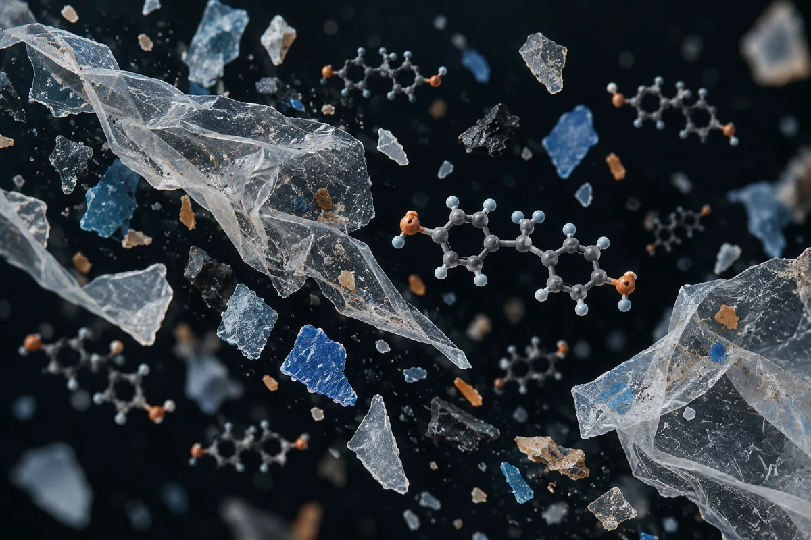

BPA, ftalatos e microplástico (exposição a plástico)
Em homens, mais BPA na urina andou junto com testosterona mais alta, não mais baixa; com ftalatos há associação. Três dias sem comida embalada cortaram o BPA da urina em 66%.

实验性材料。在使用这里的任何东西之前请先阅读。
本页没有任何内容属于医疗建议、处方或治疗方案。这是对研究社群中流传的方案的整理翻译，以及在存在的情况下，已发表试验所测试过的内容。两者的标记方式不同 — 它们并不等价。
这里的大部分化合物没有获得 FDA 批准用于人体。其中不少以“仅供研究使用”的标签出售，这意味着它们没有经过供人摄入的纯度、无菌或含量管控。社群描述的剂量不是被验证过的剂量：它只是某个人报告自己那样做了。
在考虑使用其中任何一种化合物之前，请先与有资质的医疗专业人员谈一谈。如果你已经在用某一种，并且感到有预期之外的情况，请去就医 — 不要等下一次常规体检。
摘要
BPA, ftalatos e microplástico estão no corpo de quase todo mundo: o BPA apareceu na urina de 92,6% dos americanos testados em 2003–2004. A queda da testosterona e da contagem de espermatozoides ao longo das décadas é real, mas a causa não foi estabelecida. Em homens adultos, dois estudos acharam testosterona mais alta, não mais baixa, em quem tinha mais BPA; para os ftalatos DEHP e DBP, uma revisão sistemática achou evidência robusta de associação com desfechos reprodutivos. Várias alegações que circulam não existem nas fontes citadas. O que reduz a exposição foi medido: trocar comida enlatada e embalada por comida fresca derrubou o BPA da urina em dias.
本页为什么存在
O plástico aparece descrito em vídeos curtos sobre saúde masculina que vi publicados na internet, como a causa escondida da testosterona baixa, da ereção fraca e até de um pênis menor que o dos avós. O roteiro se repete: o bisfenol A (BPA) da garrafa e do recibo "se passa por estrogênio", o eixo hormonal "pisa no freio", os ftalatos da embalagem derrubam a testosterona "em até 24%", o microplástico "inflama" as células do testículo, e tudo isso seria planejado pela indústria. Os números vêm com nome de universidade, revista e ano.
Esta página é diferente das outras da série porque não trata de algo que se toma, e sim de algo que se evita. Por isso, no lugar da tabela de doses, ela traz o que foi medido sobre exposição: quanto existe no corpo das pessoas, o que os estudos em humanos acharam sobre testosterona e fertilidade, e quais mudanças de hábito de fato baixaram a quantidade na urina.
Levantei as alegações de 9 vídeos curtos, separei as 27 verificáveis e procurei cada estudo citado e cada número. Nenhum número desta página veio da fonte secundária do site.
O que é cada coisa, e por onde entra
- BPA (bisfenol A). Segundo a revisão de vom Saal e Hughes (2005), é o monômero do policarbonato e da resina que reveste latas; as ligações dessas resinas se desfazem e o BPA migra para o alimento. Segundo Hormann e colegas (2014), também é aplicado livre na camada externa do papel térmico de recibo, em cerca de 20 mg por grama de papel.
- BPS (bisfenol S). É um substituto do BPA. No regulamento europeu que restringiu o BPA no papel térmico, o comitê de avaliação de risco aponta o BPS como "o substituto mais provável" no papel e diz que ele pode ter perfil tóxico parecido.
- Ftalatos. São plastificantes e aditivos. Segundo Meeker e Ferguson (2014), estão em plásticos e em produtos de higiene. A revisão de Radke e colegas (2018) avaliou seis: DEHP, DINP, DBP, DIBP, BBP e DEP.
- Microplástico e nanoplástico. São partículas de plástico de 1 µm a 5 mm (micro) e abaixo de 1 µm (nano), na definição usada por Qian e colegas (2024). Diferem do BPA e dos ftalatos: são o próprio polímero em pedaços, não uma molécula que se solta dele.
Quanta exposição existe, medida em gente
- BPA na urina de quase todos. Na pesquisa nacional de saúde dos Estados Unidos de 2003–2004, com 2.517 participantes de 6 anos ou mais, o BPA foi detectado em 92,6% (Calafat 2008). Num estudo com 308 jovens dinamarqueses, em 98% (Lassen 2014). Num estudo italiano com 715 adultos, a excreção média foi 5,63 µg por dia (Galloway 2010).
- O peso do microplástico ingerido depende de quem calcula. A estimativa que deu origem à comparação com um cartão de crédito, feita com coautoria do WWF, chegou a uma faixa de 0,1 a 5 g por semana, somando 59 publicações (Senathirajah 2021). Outro modelo, de Wageningen, estimou para adultos uma mediana de 883 partículas e 583 nanogramas por dia (Mohamed Nor 2021). As duas estimativas não estão na mesma escala: uma fala em gramas por semana, a outra em nanogramas por dia.
- Água engarrafada. Com uma técnica de imagem nova, Qian e colegas (2024) contaram cerca de 2,4 × 10⁵ partículas de micro e nanoplástico por litro de água engarrafada, 90% delas nanoplástico. O estudo mediu partículas, não efeito na saúde, e não comparou com água de torneira.
- No testículo. Hu e colegas (2024) acharam microplástico em todos os 47 testículos de cães e 23 testículos humanos que analisaram, com média de 328,44 µg/g nos humanos e polietileno como polímero dominante. A contagem de espermatozoides só foi medida nos cães. O artigo recebeu um comentário de outros autores, publicado em 2025 com resposta dos autores; não li o comentário.
- Calor e micro-ondas. Em laboratório, aquecer potes plásticos no micro-ondas foi o cenário que mais soltou partículas: alguns potes liberaram até 4,22 milhões de micropartículas e 2,11 bilhões de nanopartículas por centímetro quadrado em 3 minutos (Hussain 2023).
O mecanismo: forte no laboratório, fraco e às vezes ao contrário no ser humano
No tubo de ensaio e no rato, o BPA tem efeito hormonal. Segundo vom Saal e Hughes (2005), o modo de ação estrogênico do BPA é confirmado por experimentos in vitro. Lee e colegas (2003), em levedura e em células, viram o BPA agir como antagonista do receptor androgênico: a 50 nM, ele inibiu no máximo 40% da ligação do DHT ao receptor. Em ratos, Akingbemi e colegas (2004) viram 2,4 µg/kg por dia de BPA baixarem o LH e a testosterona, e 0,01 nM de BPA reduzirem em 25% a produção de testosterona de células de Leydig, por queda de uma enzima da síntese (17α-hidroxilase/17,20-liase). No mesmo trabalho, o BPA inibiu a aromatase das células de Leydig e baixou o estradiol, o contrário do que se diz nos vídeos.
Em homens adultos, o sinal não segue o roteiro. Em 308 jovens dinamarqueses, quem estava no quartil mais alto de BPA na urina tinha, em média, testosterona total 18% mais alta, LH 22% mais alto e estradiol 13% mais alto que o quartil mais baixo (Lassen 2014). Os autores leem esse padrão como possível bloqueio do receptor no circuito de retroalimentação, que faria o corpo produzir mais hormônio, e pedem confirmação. Em 715 adultos italianos, mais BPA excretado por dia se associou a testosterona total mais alta nos homens (Galloway 2010). Os dois estudos são transversais: medem associação num momento, não causa.
Para os ftalatos, o sinal humano é mais consistente com a hipótese antiandrogênica. A revisão sistemática de Radke e colegas (2018), da agência ambiental americana, achou evidência robusta de associação entre DEHP e DBP e desfechos reprodutivos masculinos (distância anogenital, sêmen, testosterona) e evidência moderada para DINP e BBP. Na pesquisa americana de 2011–2012, um aumento interquartil dos metabólitos de DEHP se associou a testosterona 29% menor em meninos de 6 a 12 anos; nos homens adultos, só houve associação inversa significativa ou sugestiva na faixa de 40 a 60 anos (Meeker e Ferguson 2014).
Uma alegação específica dos vídeos tem teste direto. Em células humanas, nem o BPA nem o BPS inibiram a 5-alfa-redutase tipo 1, a enzima que transforma testosterona em DHT, mesmo a 100 µM; só derivados halogenados do BPA, usados como retardantes de chama, inibiram (Wang 2025).
到底有多少证据
Os números abaixo foram levantados por mim em 16 de outubro de 2026, no PubMed e no ClinicalTrials.gov. A consulta de cada linha está ao lado do número, para qualquer pessoa repetir e me contradizer.
| 基础 | 检索式 | 结果 |
|---|---|---|
| PubMed | bisphenol A | 21.749 artigos |
| PubMed | phthalates | 37.853 artigos |
| PubMed | (bisphenol A) AND (testosterone) AND (humans[MeSH Terms]) | 158 artigos |
| PubMed | (phthalates) AND (testosterone) AND (humans[MeSH Terms]) | 281 artigos |
| PubMed | (bisphenol A OR phthalates) AND (testosterone OR semen OR sperm) AND (Meta-Analysis[Publication Type]) | 17 篇文章 |
| PubMed | (microplastics) AND (testis OR testes OR sperm OR semen) | 296 artigos |
| PubMed | (microplastics) AND (testis OR testes OR sperm OR semen) AND (humans[MeSH Terms]) | 95 artigos |
| PubMed | (bisphenol A OR phthalates) AND (intervention) AND (urinary) AND (Randomized Controlled Trial[Publication Type]) | 25 artigos |
| PubMed | (bisphenol A) AND (penile length OR penis size) | 17 篇文章 |
| ClinicalTrials.gov | intervenção: bisphenol | 50 estudos registrados |
| ClinicalTrials.gov | intervenção: phthalate | 43 项已登记研究 |
| ClinicalTrials.gov | intervenção: microplastic | 39 estudos registrados |
| ClinicalTrials.gov | intervenção: (bisphenol OR phthalate) AND AREA[Phase]PHASE3 | 1 ensaio de fase 3 |
对这些数字的诚实解读
- Muito estudo de exposição, quase nenhum de intervenção com desfecho hormonal. Há dezenas de milhares de artigos sobre BPA e ftalatos, mas os estudos de intervenção medem o químico na urina, não a testosterona.
- O filtro de humanos inclui revisões e estudos com animal. Os 95 artigos de microplástico e testículo com a marcação de humanos incluem revisões e trabalhos que comparam espécies; o estudo com tecido humano que localizei tem 23 testículos.
- O único "fase 3" é falso positivo. O registro devolvido é de um tratamento para covid-19 que não tem relação com bisfenol nem ftalato; a busca casou por acaso.
- A busca por
bisphenoltambém pega odontologia. Vários dos 50 registros são de resinas dentárias que liberam monômeros com bisfenol. Entre os que tratam de exposição, há biomonitoramento e programas de educação; nenhum título que li menciona testosterona. - Registro não é resultado. Quatro dos registros de intervenção para reduzir exposição têm o mesmo patrocinador, uma empresa privada, e testam programas de biomonitoramento com devolutiva de resultado; o patrocínio está declarado no próprio registro.
- Contagem de artigo mede atenção acadêmica, não evidência de desfecho.
Os estudos em humanos sobre testosterona, sêmen e tendência no tempo
Segundo o PubMed, estes são os trabalhos concretos por trás do que se diz sobre plástico e saúde masculina. Leia o que cada um mediu, e em quantas pessoas.
| 研究 | N | 背景 | 它报告了什么 | 保留 |
|---|---|---|---|---|
| Travison et al., 2007 J Clin Endocrinol Metab 92(1):196-202 · PMID 17062768 | 1.532 homens (2.769 medidas) | Coorte de Massachusetts, 45 a 79 anos, três ondas de 1987 a 2004 | Queda de testosterona independente da idade, não explicada por fumo, obesidade e outros fatores medidos | Os autores apontam diferença entre gerações ou fatores de saúde e ambiente não medidos; não medem plástico; o percentual anual não está no resumo |
| Feldman et al., 1994 J Urol 151(1):54-61 · PMID 8254833 | não informado no resumo | Mesma coorte, 40 a 70 anos, 1987–1989 | Prevalência combinada de disfunção erétil mínima, moderada ou completa de 52% | Fatores associados: idade, doença cardíaca, hipertensão, diabetes, remédios, raiva e depressão; plástico não foi estudado |
| Levine et al., 2023 Hum Reprod Update 29(2):157-176 · PMID 36377604 | 223 estudos, 288 estimativas | Revisão sistemática da concentração de espermatozoides, 1973–2018 | Queda de 51,6% em homens não selecionados; 1,16% ao ano desde 1972 e 2,64% ao ano desde 2000 | Mede contagem, não fertilidade; não identifica causa; autora citada nos vídeos é coautora |
| Belladelli et al., 2023 World J Mens Health 41(4):848-860 · PMID 36792094 | 55.761 homens (75 estudos) | Meta-análise do comprimento do pênis, 1942–2021 | Comprimento ereto aumentou 24% em 29 anos, após ajuste; sem tendência no flácido e no esticado | Meta-análise de estudos com métodos de medida diferentes |
| Lassen et al., 2014 Environ Health Perspect 122(5):478-84 · PMID 24786630 | 308 | Jovens dinamarqueses da população geral | Quartil mais alto de BPA: testosterona total +18% (IC 8–28%), LH +22%, estradiol +13%; motilidade progressiva −6,7 pontos percentuais | Transversal; uma amostra de urina |
| Galloway et al., 2010 Environ Health Perspect 118(11):1603-8 · PMID 20797929 | 715 | Adultos italianos de 20 a 74 anos, urina de 24 h | Mais BPA excretado por dia, testosterona total mais alta nos homens (p = 0,004) | Transversal |
| Meeker e Ferguson, 2014 J Clin Endocrinol Metab 99(11):4346-52 · PMID 25121464 | não informado no resumo | Pesquisa nacional americana 2011–2012, 13 metabólitos de ftalato | Meninos de 6 a 12 anos: −29% de testosterona por aumento interquartil de DEHP; homens adultos: associação inversa só aos 40–60 anos | Transversal |
| Radke et al., 2018 Environ Int 121(Pt 1):764-793 · PMID 30336412 | 13 estudos incluídos para testosterona | Revisão sistemática de ftalatos e desfechos reprodutivos masculinos | Evidência robusta para DEHP e DBP; moderada para DINP e BBP; leve para DIBP e DEP | Avaliação de força de evidência, não meta-análise de efeito; há errata publicada em 2019 |
| Castellini et al., 2022 Biochem Pharmacol 197:114896 · PMID 34968490 | 2.399 homens (9 estudos) | Meta-análise de BPA na urina e sêmen | Só a motilidade teve associação (β −0,82; IC −1,51 a −0,12), perdida após ajuste por viés de publicação | Os autores concluem associação "clinicamente desprezível, se houver" |
| Bonde et al., 2016 Hum Reprod Update 23(1):104-125 · PMID 27655588 | 33 artigos (28 populações) | Exposição antes e logo depois do nascimento a disruptores endócrinos | Razão de chances geral 1,11 (IC 0,91–1,35); só o p,p'-DDE se associou (1,35; IC 1,04–1,74) | Dados insuficientes para BPA e ftalatos isoladamente |
| Hu et al., 2024 Toxicol Sci 200(2):235-240 · PMID 38745431 | 23 testículos humanos, 47 de cães | Microplástico medido por pirólise e cromatografia | Microplástico em todas as amostras; média humana 328,44 µg/g | Contagem de espermatozoides só nos cães; recebeu comentário publicado em 2025 |
O que de fato reduz a exposição
Isto não é recomendação: é o registro do que foi testado em estudos publicados, com o que cada um mediu. Nenhum deles mediu testosterona, ereção ou fertilidade; todos mediram o químico na urina.
| 研究 | N | O que mudou | 持续时间 | O que aconteceu na urina | 保留 |
|---|---|---|---|---|---|
| Rudel et al., 2011 Environ Health Perspect 119(7):914-20 · PMID 21450549 | 20 (5 famílias) | Só comida fresca, sem lata e sem embalagem plástica | 3 dias | BPA −66% (média geométrica de 3,7 para 1,2 ng/mL); metabólitos de DEHP −53% a −56% | Sem grupo controle; autores ligados a organizações que defendem regulação mais rígida do BPA, como o próprio artigo declara |
| Sathyanarayana et al., 2013 J Expo Sci Environ Epidemiol 23(4):378-84 · PMID 23443238 | 40 (10 famílias) | Troca completa da dieta (21) contra orientação escrita (19); randomizado | 5 天 | No braço da dieta trocada, metabólitos de DEHP subiram de 283,7 para 7.027,5 nmol/g e o BPA também subiu | Coentro moído com 21.400 ng/g de DEHP e leite com 673 ng/g; a orientação escrita não mudou nada |
| Carwile et al., 2009 Environ Health Perspect 117(9):1368-72 · PMID 19750099 | 77 | Bebidas frias em garrafa de policarbonato | 1 semana | BPA +69% | Não randomizado; mostra o efeito de usar, não de evitar |
| Carwile et al., 2011 JAMA 306(20):2218-20 · PMID 22110104 | 75 | Uma porção de sopa enlatada por dia contra sopa fresca; randomizado, cruzado | 5 天 | BPA 1.221% maior após a sopa enlatada (20,8 contra 1,1 µg/L) | Uma marca de sopa; pico provavelmente transitório |
| Harley et al., 2016 Environ Health Perspect 124(10):1600-1607 · PMID 26947464 | 100 meninas | Produtos de higiene com rótulo "sem ftalato, parabeno, triclosan e BP-3" | 3 dias | Ftalato monoetílico −27,4%; metilparabeno −43,9%; propilparabeno −45,4%; dois outros ftalatos sem mudança | Sem grupo controle; adolescentes |
| Hagobian et al., 2017 J Womens Health 26(2):128-132 · PMID 27726525 | 24 mulheres | Orientação semanal, cosméticos sem BPA e potes de vidro; randomizado | 3 周 | BPA caiu no grupo da intervenção e subiu no controle (p = 0,04) | Piloto pequeno |
O que esses estudos dizem, juntos: a comida enlatada e embalada é fonte grande de BPA e de DEHP, e tirá-la baixa os níveis em poucos dias. O que eles também dizem: a contaminação está na cadeia de produção do alimento, e uma dieta "limpa" pode piorar a exposição se os ingredientes estiverem contaminados.
Das 27 alegações conferidas, 3 se confirmam, e nenhuma delas é sobre testosterona
Cada linha é uma alegação como ela circula, sem o nome de quem a fez. O veredito usa os rótulos confirmado, parcialmente, não sustentado, sem estudo em humanos, estudo em animal ou in vitro e número não encontrado na fonte citada.
| O que se diz | O que os estudos mostram | 结论 |
|---|---|---|
| A testosterona cai 1% ao ano desde 1988 (estudo de Massachusetts, 1.500 homens): "não é envelhecimento, é exposição" | A queda independente da idade existe em 1.532 homens (Travison 2007), mas não foi explicada pelos fatores medidos, e os autores não a atribuem a plástico; o percentual anual não está no resumo | Parcialmente |
| Testosterona e fertilidade masculina caem 1% ao ano (pesquisadora de Rochester) | A meta-análise em que ela é coautora mostra queda da contagem de espermatozoides de 1,16% ao ano desde 1972 (Levine 2023); contagem não é fertilidade, e a causa não foi identificada | Parcialmente |
| Ingerimos 5 g de microplástico por semana, "um cartão de crédito" | 5 g é o teto de uma faixa de 0,1 a 5 g (Senathirajah 2021); outro modelo estimou 583 nanogramas por dia para adultos (Mohamed Nor 2021) | Parcialmente |
| Ingerimos 7 g por semana | A estimativa que originou a comparação com o cartão para em 5 g | Número não encontrado na fonte citada |
| Homens nascidos depois de 1980 têm em média 25% a menos de tamanho peniano que os avós (Universidade de Copenhague) | Não localizei esse estudo; a meta-análise de 2023 achou o comprimento ereto 24% maior em 29 anos (Belladelli 2023) | Número não encontrado na fonte citada |
| 52% dos homens de 40 a 70 anos têm algum grau de disfunção erétil (estudo de Massachusetts) | Feldman 1994 publica 52%; os fatores associados foram idade, doença cardiovascular, diabetes, remédios e humor; plástico não foi estudado | Confirmado (o número, não a ligação com plástico) |
| 60% dos homens acima de 40 têm "dominância estrogênica comprovada por exame" (American Journal of Men's Health, 2024) | A busca nessa revista em 2024 por estradiol ou estrogênio devolve 3 artigos, nenhum com esse número | Número não encontrado na fonte citada |
| Ftalatos reduzem a testosterona em até 24%, em 1.066 homens (Rochester, 2021) | Não localizei esse estudo; o mais próximo é a pesquisa americana de 2011–2012: −29% em meninos e associação em homens só aos 40–60 anos (Meeker e Ferguson 2014) | Número não encontrado na fonte citada |
| O BPA bloqueia o receptor androgênico: "a testosterona está no sangue, só não entra na célula" (Journal of Clinical Endocrinology, 2016) | O antagonismo do receptor foi visto em levedura e células (Lee 2003); não achei o artigo de 2016 citado; em homens, mais BPA andou com testosterona mais alta (Lassen 2014) | Estudo em animal ou in vitro |
| O BPS "do antiaderente da frigideira" destrói as células que produzem testosterona (Harvard, 2020) | Não localizei o estudo; o BPS é descrito como substituto do BPA no papel térmico (regulamento europeu de 2016), não como revestimento de frigideira | Não sustentado |
| Os compostos suprimem a 5-alfa-redutase e "colapsam" o DHT | Em células humanas, BPA e BPS não inibiram a enzima nem a 100 µM (Wang 2025) | Não sustentado |
| O BPA imita estrogênio e ativa a aromatase | A ação estrogênica é confirmada in vitro (vom Saal e Hughes 2005); no rato, o BPA inibiu a aromatase das células de Leydig (Akingbemi 2004) | Estudo em animal ou in vitro |
| O bisfenol avisa o cérebro que há estrogênio sobrando, o eixo "pisa no freio" e a testosterona cai | Em homens, mais BPA andou com testosterona e LH mais altos (Lassen 2014; Galloway 2010), o oposto do freio | Não sustentado |
| BPA e ftalatos "convencem o sistema hormonal" e prejudicam a produção de hormônio masculino | Para DEHP e DBP há evidência robusta de associação com desfechos reprodutivos (Radke 2018); para o BPA, os estudos em homens não mostram queda | Parcialmente |
| Microplásticos inflamam as células de Leydig; "metanálises clínicas comprovam" | Há microplástico em testículo humano (Hu 2024), mas não localizei meta-análise clínica de inflamação de Leydig em humanos | Sem estudo em humanos |
| O BPA prejudica a enzima que fabrica testosterona (modelo animal) | Em ratos, o BPA reduziu a enzima 17α-hidroxilase/17,20-liase e a testosterona (Akingbemi 2004) | Estudo em animal ou in vitro |
| O calor libera plástico: marmita no micro-ondas, garrafa no carro quente | O micro-ondas foi o cenário de maior liberação em laboratório (Hussain 2023); NÃO VERIFIQUEI estudo de garrafa em carro quente | Parcialmente |
| A garrafa de água mineral não é mais pura que a torneira | Cerca de 240 mil partículas por litro de água engarrafada (Qian 2024); o estudo não comparou com torneira nem mediu efeito na saúde | Parcialmente |
| O recibo de papel térmico solta BPA que atravessa a pele "em segundos"; um estudo da PLOS ONE mediu no sangue e na urina | O estudo existe (Hormann 2014): o BPA subiu no sangue e na urina em até 90 minutos, mas os voluntários também comeram batata frita com a mão; "segundos" não está no resumo | Parcialmente |
| O álcool em gel aumenta a absorção | No mesmo estudo, os voluntários seguraram o recibo logo depois de usar um higienizador com químicos que facilitam a penetração na pele, e os autores atribuem a absorção alta a essa combinação; o resumo não traz comparação sem higienizador | Parcialmente |
| A Europa restringiu o BPA no papel térmico | Regulamento (UE) 2016/2235: proibido a partir de 0,02% em peso depois de 2 de janeiro de 2020 | Confirmado |
| Caixas de mercado ficam expostos o dia todo e há "zero estudo oficial"; no Brasil ninguém fiscaliza | A restrição europeia foi baseada justamente no risco para caixas, com dados de biomonitoramento; NÃO VERIFIQUEI regra brasileira para papel térmico | Não sustentado |
| "As empresas financiaram os estudos que dizem que é seguro" | Em 2005, nenhum estudo financiado pela indústria tinha achado efeito de doses baixas, contra mais de 90% dos financiados por governo (vom Saal e Hughes 2005) | Parcialmente |
| O uso de BPA em mamadeiras é proibido | No Brasil, desde 2011, hoje sob a RDC 56/2012; na UE, o BPA foi proibido em materiais em contato com alimento em 2024 | Confirmado |
| O BPA aumenta risco de infertilidade, doença metabólica, alteração fetal, câncer e doença cardiovascular | A autoridade europeia (EFSA 2023) concluiu que há preocupação de saúde, com o efeito crítico no sistema imune de camundongos; as meta-análises de sêmen e de malformação não acharam associação clara (Castellini 2022; Bonde 2016) | Parcialmente |
| Ftalatos, soja processada e conservantes são "formulados para sangrar o hormônio masculino"; "não é acidente, é design" | Nenhuma fonte citada e nenhuma localizada | Não sustentado |
| Trocar plástico por vidro e inox, não aquecer marmita plástica, evitar embalagem | Reduzir comida enlatada e embalada baixou BPA e DEHP na urina em dias (Rudel 2011; Hagobian 2017), mas a dieta pode ser contaminada por outros caminhos (Sathyanarayana 2013), e nenhum estudo mediu testosterona depois | Parcialmente |
Placar: 3 confirmadas, 11 parcialmente, 5 não sustentadas, 1 sem estudo em humanos, 3 com estudo só em animal ou in vitro e 4 com número não encontrado na fonte citada.
Quem tem mais motivo para reduzir a exposição
- Gestantes e crianças pequenas. É o grupo que a regulação protege primeiro: no Brasil, o BPA não é autorizado em mamadeiras e artigos para crianças de até 3 anos, e o DEHP tem limite próprio em plástico para alimento de crianças de 0 a 3 anos. A restrição europeia ao papel térmico teve como população em risco os filhos de trabalhadoras grávidas.
- Quem manuseia papel térmico o dia todo. O comitê europeu de avaliação de risco concluiu que o risco para consumidores estava controlado, mas confirmou o risco para trabalhadores, principalmente caixas (Regulamento 2016/2235).
- Quem come muita comida enlatada. Uma porção diária de sopa enlatada multiplicou o BPA da urina (Carwile 2011).
- Homens com testosterona baixa ou problema de ereção. Não achei estudo mostrando que reduzir plástico corrige isso. As causas registradas na coorte de Massachusetts são outras: idade, doença cardiovascular, diabetes, remédios e humor (Feldman 1994). Trocar o pote pode reduzir exposição; não substitui investigação médica.
- A exposição da população ainda está acima do que a Europa considera tolerável. Em 2023, a autoridade europeia baixou a ingestão diária tolerável de BPA de 4 µg por quilo (valor temporário de 2015) para 0,2 ng por quilo, e disse que a exposição alimentar média e alta passa desse valor em duas a três ordens de grandeza (EFSA 2023). O efeito que guiou o cálculo foi imune, em camundongos, não hormonal masculino.
监管状态
- Brasil, BPA em plástico para alimento: limite de migração específica de 0,05 mg/kg e uso não autorizado em polímeros de mamadeiras e artigos para alimentar lactentes e crianças de até 3 anos (RDC 56/2012, na redação dada pela RDC 589/2021; texto consolidado conferido com alterações até a RDC 1.020, de 2 de abril de 2026). A primeira proibição em mamadeiras veio com a RDC 41/2011, com venda permitida só até 31 de dezembro de 2011.
- Brasil, ftalatos em plástico para alimento: limites de migração de 1,5 mg/kg para o DEHP, 0,3 mg/kg para o DBP e 30 mg/kg para o BBP, com limite de grupo de 60 mg/kg; o DEHP só pode ser plastificante de objeto reutilizável em contato com alimento não gorduroso ou adjuvante até 0,1%, e não pode passar de 0,1% em plástico para alimento de crianças de 0 a 3 anos (RDC 326/2019, texto consolidado).
- Brasil, papel térmico: NÃO VERIFIQUEI se existe norma brasileira sobre BPA em papel de recibo.
- União Europeia: BPA proibido no papel térmico a partir de 0,02% em peso desde 2 de janeiro de 2020 (Regulamento 2016/2235). BPA e seus sais proibidos na fabricação de materiais em contato com alimentos (Regulamento 2024/3190, adotado em 19 de dezembro de 2024), com venda de artigos descartáveis já fabricados permitida até 20 de julho de 2026. Ingestão diária tolerável de 0,2 ng/kg (EFSA 2023). NÃO VERIFIQUEI os limites europeus atuais para ftalatos.
- Estados Unidos: NÃO VERIFIQUEI a situação regulatória do BPA e dos ftalatos.
这次梳理没有做什么
- Li resumos, não os artigos inteiros, salvo o da sopa enlatada, que li no texto aberto.
- Não localizei o estudo de Copenhague sobre tamanho peniano, o artigo de 2016 sobre receptor androgênico, o estudo de Harvard de 2020 sobre BPS, o artigo de 2024 com "60% de dominância estrogênica" e o estudo de 2021 com 1.066 homens. Podem existir fora do PubMed; não os achei.
- Não conferi o percentual anual de queda da testosterona no texto completo do estudo de Massachusetts.
- Não verifiquei norma brasileira sobre papel térmico, a situação nos Estados Unidos e os limites europeus atuais para ftalatos.
- Não avaliei parabenos, atrazina, glifosato e os "compostos do brócolis", que aparecem nos mesmos vídeos e têm páginas próprias nesta série.
- Não li os estudos em animais sobre microplástico e testículo; contei-os, mas a página trata do que foi medido em gente.
- Não avaliei estudos de garrafa plástica exposta ao calor do carro.
参考文献
- Travison TG, Araujo AB, O'Donnell AB, et al. A population-level decline in serum testosterone levels in American men. J Clin Endocrinol Metab. 2007;92(1):196-202. PMID 17062768 — queda de testosterona independente da idade em 1.532 homens, sem causa identificada.
- Feldman HA, Goldstein I, Hatzichristou DG, et al. Impotence and its medical and psychosocial correlates: results of the Massachusetts Male Aging Study. J Urol. 1994;151(1):54-61. PMID 8254833 — os 52% de disfunção erétil e seus fatores associados.
- Levine H, Jørgensen N, Martino-Andrade A, et al. Temporal trends in sperm count: a systematic review and meta-regression analysis of samples collected globally in the 20th and 21st centuries. Hum Reprod Update. 2023;29(2):157-176. PMID 36377604 — queda de 51,6% da concentração de espermatozoides, 1,16% ao ano.
- Belladelli F, Del Giudice F, Glover F, et al. Worldwide Temporal Trends in Penile Length: A Systematic Review and Meta-Analysis. World J Mens Health. 2023;41(4):848-860. PMID 36792094 — comprimento ereto 24% maior em 29 anos.
- Senathirajah K, Attwood S, Bhagwat G, et al. Estimation of the mass of microplastics ingested - A pivotal first step towards human health risk assessment. J Hazard Mater. 2021;404(Pt B):124004. PMID 33130380 — a faixa de 0,1 a 5 g por semana.
- Mohamed Nor NH, Kooi M, Diepens NJ, et al. Lifetime Accumulation of Microplastic in Children and Adults. Environ Sci Technol. 2021;55(8):5084-5096. PMID 33724830 — mediana de 583 ng por dia em adultos.
- Hussain KA, Romanova S, Okur I, et al. Assessing the Release of Microplastics and Nanoplastics from Plastic Containers and Reusable Food Pouches: Implications for Human Health. Environ Sci Technol. 2023;57(26):9782-9792. PMID 37343248 — micro-ondas como cenário de maior liberação.
- Qian N, Gao X, Lang X, et al. Rapid single-particle chemical imaging of nanoplastics by SRS microscopy. Proc Natl Acad Sci U S A. 2024;121(3):e2300582121. PMID 38190543 — cerca de 240 mil partículas por litro de água engarrafada.
- Hu CJ, Garcia MA, Nihart A, et al. Microplastic presence in dog and human testis and its potential association with sperm count and weights of testis and epididymis. Toxicol Sci. 2024;200(2):235-240. PMID 38745431 — microplástico em 23 testículos humanos.
- Uppu RM, Peijnenburg W, Hays SM. Comment on: "Microplastic presence in dog and human testis and its potential association with sperm count and weights of testis and epididymis". Toxicol Sci. 2025;206(2):456-457. PMID 39475449 — o comentário publicado sobre o estudo do testículo (não lido).
- Calafat AM, Ye X, Wong LY, et al. Exposure of the U.S. population to bisphenol A and 4-tertiary-octylphenol: 2003-2004. Environ Health Perspect. 2008;116(1):39-44. PMID 18197297 — BPA na urina de 92,6% de 2.517 pessoas.
- Lassen TH, Frederiksen H, Jensen TK, et al. Urinary bisphenol A levels in young men: association with reproductive hormones and semen quality. Environ Health Perspect. 2014;122(5):478-84. PMID 24786630 — mais BPA, testosterona e LH mais altos em 308 jovens.
- Galloway T, Cipelli R, Guralnik J, et al. Daily bisphenol A excretion and associations with sex hormone concentrations: results from the InCHIANTI adult population study. Environ Health Perspect. 2010;118(11):1603-8. PMID 20797929 — mais BPA, testosterona mais alta em homens italianos.
- Meeker JD, Ferguson KK. Urinary phthalate metabolites are associated with decreased serum testosterone in men, women, and children from NHANES 2011-2012. J Clin Endocrinol Metab. 2014;99(11):4346-52. PMID 25121464 — ftalatos e testosterona por faixa etária.
- Radke EG, Braun JM, Meeker JD, et al. Phthalate exposure and male reproductive outcomes: A systematic review of the human epidemiological evidence. Environ Int. 2018;121(Pt 1):764-793. PMID 30336412 — evidência robusta para DEHP e DBP.
- Castellini C, Muselli M, Parisi A, et al. Association between urinary bisphenol A concentrations and semen quality: A meta-analytic study. Biochem Pharmacol. 2022;197:114896. PMID 34968490 — associação desprezível entre BPA e sêmen.
- Bonde JP, Flachs EM, Rimborg S, et al. The epidemiologic evidence linking prenatal and postnatal exposure to endocrine disrupting chemicals with male reproductive disorders: a systematic review and meta-analysis. Hum Reprod Update. 2016;23(1):104-125. PMID 27655588 — razão de chances geral 1,11, sem significância.
- Akingbemi BT, Sottas CM, Koulova AI, et al. Inhibition of testicular steroidogenesis by the xenoestrogen bisphenol A is associated with reduced pituitary luteinizing hormone secretion and decreased steroidogenic enzyme gene expression in rat Leydig cells. Endocrinology. 2004;145(2):592-603. PMID 14605012 — efeito do BPA em células de Leydig de rato; aromatase inibida.
- Lee HJ, Chattopadhyay S, Gong EY, et al. Antiandrogenic effects of bisphenol A and nonylphenol on the function of androgen receptor. Toxicol Sci. 2003;75(1):40-6. PMID 12805653 — antagonismo do receptor androgênico in vitro.
- Wang S, Wang S, Lu H, et al. Significant enhancement of inhibitory strength of bisphenol A analogs against human and rat 5α-reductase 1 upon halogenation of the benzene ring: Potentially disrupting neurosteroid biosynthesis. Toxicol Appl Pharmacol. 2025;503:117480. PMID 40684814 — BPA e BPS sem efeito na 5-alfa-redutase humana a 100 µM.
- vom Saal FS, Hughes C. An extensive new literature concerning low-dose effects of bisphenol A shows the need for a new risk assessment. Environ Health Perspect. 2005;113(8):926-33. PMID 16079060 — ação estrogênica in vitro e diferença entre estudos financiados pela indústria e por governo.
- Rudel RA, Gray JM, Engel CL, et al. Food packaging and bisphenol A and bis(2-ethyhexyl) phthalate exposure: findings from a dietary intervention. Environ Health Perspect. 2011;119(7):914-20. PMID 21450549 — três dias de comida fresca: BPA −66%.
- Sathyanarayana S, Alcedo G, Saelens BE, et al. Unexpected results in a randomized dietary trial to reduce phthalate and bisphenol A exposures. J Expo Sci Environ Epidemiol. 2013;23(4):378-84. PMID 23443238 — a dieta trocada aumentou o DEHP por contaminação de ingredientes.
- Carwile JL, Luu HT, Bassett LS, et al. Polycarbonate bottle use and urinary bisphenol A concentrations. Environ Health Perspect. 2009;117(9):1368-72. PMID 19750099 — garrafa de policarbonato: BPA +69%.
- Carwile JL, Ye X, Zhou X, et al. Canned soup consumption and urinary bisphenol A: a randomized crossover trial. JAMA. 2011;306(20):2218-20. PMID 22110104 — sopa enlatada: BPA 1.221% maior.
- Harley KG, Kogut K, Madrigal DS, et al. Reducing Phthalate, Paraben, and Phenol Exposure from Personal Care Products in Adolescent Girls: Findings from the HERMOSA Intervention Study. Environ Health Perspect. 2016;124(10):1600-1607. PMID 26947464 — trocar produtos de higiene reduziu um ftalato e parabenos.
- Hagobian T, Smouse A, Streeter M, et al. Randomized Intervention Trial to Decrease Bisphenol A Urine Concentrations in Women: Pilot Study. J Womens Health (Larchmt). 2017;26(2):128-132. PMID 27726525 — intervenção de 3 semanas reduziu o BPA.
- Hormann AM, Vom Saal FS, Nagel SC, et al. Holding thermal receipt paper and eating food after using hand sanitizer results in high serum bioactive and urine total levels of bisphenol A (BPA). PLoS One. 2014;9(10):e110509. PMID 25337790 — recibo, álcool em gel e BPA no sangue e na urina.
- EFSA Panel on Food Contact Materials, Enzymes and Processing Aids (CEP), Lambré C, Barat Baviera JM, et al. Re-evaluation of the risks to public health related to the presence of bisphenol A (BPA) in foodstuffs. EFSA J. 2023;21(4):e06857. PMID 37089179 — ingestão diária tolerável de 0,2 ng/kg e preocupação de saúde.
- Regulamento (UE) 2016/2235 da Comissão, de 12 de dezembro de 2016, no EUR-Lex — BPA no papel térmico limitado a menos de 0,02% depois de 2 de janeiro de 2020; risco confirmado para caixas.
- Regulamento (UE) 2024/3190 da Comissão, de 19 de dezembro de 2024, no EUR-Lex — proibição do BPA em materiais em contato com alimentos.
- Registros consultados no ClinicalTrials.gov: NCT01287169 (biomonitoramento de caixas, retirado), NCT06571994, NCT05780047, NCT06450951, NCT04335032 (o falso positivo de fase 3).
- PubMed 的 E-utilities（esearch）— 本页所有文章计数的来源。
- ClinicalTrials.gov 的公开 API，第 2 版 — 本页所有研究计数和 3 期计数的来源。